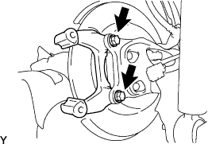
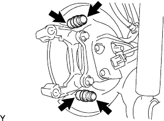
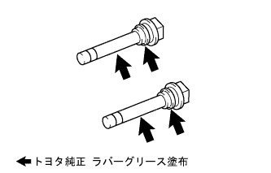
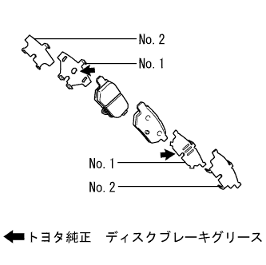
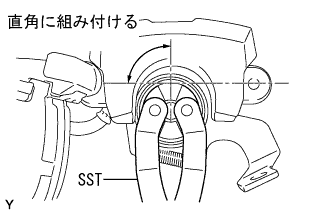
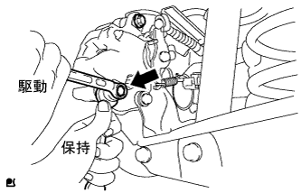
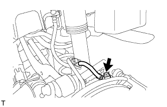
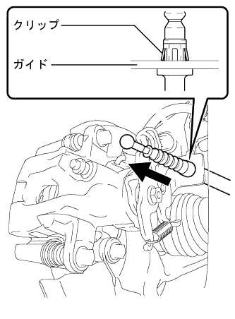
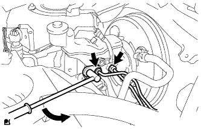
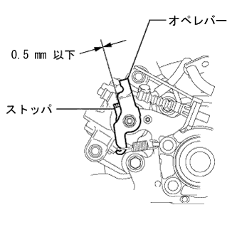

Rear Brake Installation |
| 1. Install Rear Disc |
 |
) Align the matchmarks on the disc and axle hub, and install the disc.
| 2. Install Rear Disc Brake Cylinder Mounting LH |
 |
Install the rear disc brake cylinder mounting LH to the rear axle carrier with the 2 bolts.
| 3. Install Rear Disc Brake Bushing Dust Boot |
 |
Apply rubber grease to the inside of the new rear disc brake bushing dust boots.
Install the rear disc brake bushing dust boots to the rear disc brake cylinder mounting LH.
| 4. Install Rear Disc Brake Cylinder Slide Pin |
 |
Apply rubber grease to the sliding and fitting parts of the rear disc brake cylinder slide pins.
 |
Install the rear disc brake cylinder slide pins to the rear disc brake cylinder mounting LH.
| 5. Install Rear Disc Brake Pad Support Plate |
 |
Install the rear disc brake pad support plates to the rear disc brake cylinder mounting LH.
| 6. Install Rear Disc Brake Anti-squeal Shim Kit |
 |
Apply a thin coat of disc brake grease to the inside of rear disc brake anti-squeal shim No.1.
Install rear disc brake anti-squeal shim No.1 and rear disc brake anti-squeal shim No.2 to the brake pads.
| 7. Install Disc Brake Pad Kit Rear |
 |
Install the brake pads to the rear disc brake cylinder mounting LH.
| 8. Install Rear Disc Brake Cylinder Assembly LH |
 |
When reusing the pads, use SST to turn the piston counterclockwise according to the amount of pad wear, until the piston is in a position where the pad protrusion does not lift out of the piston groove.
 |
Hold the slide pin with a wrench, and install the disc brake cylinder assembly LH with the 2 bolts.
| 9. Connect Rear Left Flexible Hose |
Install a new gasket to the rear brake flexible hose LH.
 |
Connect the rear brake flexible hose LH to the rear disc brake cylinder assembly LH with the union bolt.
| 10. Connect Parking Brake Cable Assembly NO.3 |
 |
Pass parking brake cable assembly No.3 through the guide of the rear disc brake cylinder assembly LH.
 |
Connect the cable end to the operating lever of the rear disc brake cylinder assembly LH.
| 11. Install Parking Brake Lever Protector |
 |
Install the parking brake lever protector to the parking brake cable assembly No.3.
| 12. Fill Brake Fluid |
 |
Stand the brake fluid can upside down over the reservoir.
| 13. Bleed Brake Master Cylinder Assembly |
 |
Using a union nut wrench (10mm), disconnect the 2 brake tubes from the master cylinder.
 |
Slowly depress the brake pedal and hold it.
 |
Block the tube holes with your fingers and release the brake pedal.
Remove your fingers, slowly depress and hold the brake pedal, block the tube holes again and release the brake pedal; repeat this 3 or 4 times.
 |
Using a union nut wrench (10mm), connect the 2 brake tubes to the master cylinder assembly.
| 14. Bleed Brake Line |
Connect a vinyl tube to the bleeder plug.
Depress the brake pedal several times, and loosen the bleeder plug with the brake pedal depressed. (*1)
When fluid stops coming out, tighten the bleeder plug and release the brake pedal. (*2)
Repeat (*1) to (*2) until there is no air in the brake fluid.
Bleed the air from the brake line of each wheel in the same way.
| 15. Bleed ABS & Traction Actuator Assembly |
Turn the IG OFF and depress the brake pedal 20 times or more.
With the IG still OFF, connect the SST (TaSCAN) to DLC3.
Turn IG ON.
Turn the SST (TaSCAN) power switch ON, select "Menu (Work Support)" → "ABS/VSC/ECB" → "Air Bleeding" and execute it.
Bleed Actuator Intake System
On the SST (TaSCAN) menu screen, select intake system bleeding and execute it.
Loosen the bleeder plug of the right front wheel. (*1)
Operate the SST (TaSCAN) to operate the actuator.
Check on the SST (TaSCAN) screen that operation has stopped.
Temporarily tighten the bleeder plug. (*2)
Repeat the procedure from (*1) to (*2) until the air is completely bled.
Tighten the bleeder plug.
Perform the same procedure for the right rear wheel as for the right front wheel.
Bleed Actuator Pressure Reduction System
Execute pressure reduction system bleeding on the SST (TaSCAN) menu screen.
Loosen the bleeder plug of the right front wheel. (*3)
Operate the actuator using the SST (TaSCAN), and at the same time fully depress the brake pedal and hold it.
Tighten the bleeder plug and release the brake pedal. (*4)
Repeat the procedure from (*3) to (*4) until the air is completely bled.
Tighten the bleeder plug.
Perform the same procedure for the other 3 wheels as for the right front wheel.
Perform normal brake line bleeding again by pumping the brake pedal.
| 16. Inspect for Brake Fluid Leaks |
| 17. Inspect Brake Fluid Level |
Check the brake fluid level, and add fluid up to the MAX line of the reservoir if necessary.
| 18. Install Rear Tire |
| 19. Inspect Parking Brake Lever Travel |
Pull the parking brake lever all the way once with force.
Release the parking brake lever.
Slowly pull the parking brake lever and count the number of clicks.
| 20. Adjust Parking Brake Lever Travel |
Fully release the parking brake lever.
Loosen the lock nut and adjusting nut at the parking brake lever, and fully loosen the parking brake cable.
With the engine OFF, depress the brake pedal firmly 3-5 times.
 |
Turn the adjusting nut to adjust the lever travel to the standard value.
Using a wrench, hold the adjusting nut and tighten the lock nut.
Operate the parking brake lever 3-4 times, then check the lever travel.
Check that the parking brake does not drag.
 |
When the parking brake lever is released, check that the clearance between the operating lever and the stopper of the rear disc brake cylinder is within the standard range.
Check that the brake warning light comes on when the parking brake lever is operated.
| 21. Install Console Box Assembly Rear |
 |
Engage the 4 claws.
 |
Install the console box assembly RR with the 4 bolts and 2 screws.
| 22. Install Console Box Carpet |
 |
Install the console box carpet.
| 23. Install Console Box Cover RR |
Connect the connectors.
 |
Engage the 4 clips to install the console box rear cover.